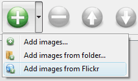

Shadowbox Iframe Flickr


Overview
Popular LightBox and Thickbox, JavaScript widgets to show content in modal windows, are outdated at the moment. They are not updated since 2007. There are some great alternatives - colorbox, jQueryUI Dialog, fancybox, DOM window, shadowbox, but we highly recommend you to try VisualLighbox - Lighbox Alternative. VisualLighbox is packed with a dozen of beautiful skins, fantastic transition effects and free gallery generator software for Mac and Windows!
Top Features See all features...Javascript Href New Window
2013-05-09
- Flickr & Photobucket support
- jQuery plugin or Prototype extension
- Floating and smooth cross-fade transition
- Slideshow with autostart option
- Windows & MAC version
- XHTML compliant
- Zoom effect with overlay shadow
- Rounded corners of overlay window
- Large images fit to browser window
- A lot of nice gallery themes
- Image rotating and hi-quality image scaling with anti-aliasing
- Automatic thumbnail creation
- Adding caption
- Built-in FTP
How to Use See all features...Javascript Window Title Change
Step 1. Adding images to your own gallery.
From the Images menu, select Add images.... Browse to the location of the folder you'd like to add and select the images. You can also use Add images from folder... and Add images from Flickr options.

Visual LightBox JS will now include these pictures. Or you can drag the images (folder) to the Visual LightBox window. The image is copied to your pictures folder and automatically added to your website gallery.

If you have included the photos that you do not wish to be in your web gallery, you can easily remove them. Select all images that you wish to remove from photo gallery, and select Delete images. from the Images menu. You can pick and choose pictures by holding the CTRL while clicking the pictures you like.
Step 2. Adding caption.
When you select an image you'll see the various information about it, such as:


Step 3 - Editing capabilities.
In this website gallery software you can easily rotate your pictures using "Rotate Left" and "Rotate Right" buttons.

Right click on the picture and select "Edit images.." item to open the selected picture in your default graph editor. You can adjust the color of pictures, as well as fix red-eye and crop out unwanted parts of an image.
Step 4. Gallery properties.
Change the name of your album, the size and quality of your pictures with jQuery Thickbox Alternative. From the Gallery menu, select Properties or use "Edit Gallery Properties" button on the toolbar.
On the first tab of the Gallery Properties window you can change the name of your photo album and enable/disable the following properties: Slide Show, Auto play Slide Show, Zoom effect, Overlay Shadow. You can also set the Overlay shadow color and select the Engine you want to use (jQuery or Prototype + script.aculo.us).

On the second tab of the Gallery Properties window you can select the thumbnail you want to use, set the Thumbnails Resolution, Thumbnails Quality, Thumbnails Titles. Select Thumbnails Format (save in PNG or JPG format). Specify the Number of columns in you photo album and the Page color.

On the third tab of the Gallery Properties window you can select the template, Image resolution and Image quality of your pictures and change the Watermark.

You can set up the various sizes for exported images.

Control the quality of output PNG or JPEG format image by defining output "Image quality" and "Thumbnail quality" parameters (0%...100%).

Step 5 - Publishing of the jQuery Thickbox Alternative.
When you are ready to publish your website photo album online or to a local drive for testing you should go to "Gallery/Publish Gallery". Select the publishing method: publish to folder or publish to FTP server.

You are able to add a new FTP site by clicking "Edit" to the right of the "Publish to FTP server" drop down list. FTP Location Manager window will appear. Now type in a meaningful (this is not the actual hostname) name for your site and fill in the FTP details in the appropriate fields. You will have to type in your hostname, e.g. domain. The FTP port is normally located on port 21 thus this has been prefilled for you already. If your web site uses another port, you will have to enter it here.
Type in your username and password for the connection. If you do not fill in this information, Visual LightBox is unable to connect to your site and thus not able to upload your gallery to website. If this site enables anonymous connections, just type in anonymous as the username and your e-mail address as the password.
You might want to change the Directory as well if you need to have your uploaded images placed in e.g. "www/gallery/". You can specify it in the FTP Folder field on the Publish Gallery window.
Notice: Write the name of the folder where your website gallery will be placed on the server. Notice that you should specify this field; otherwise your website album will be uploaded into the root folder of your server!
Step 6. Save your photo gallery as project file.
When you exit jQuery Thickbox Alternative application, you'll be asked if you want to save your project. The project consists of the pictures you choose to put on your web photo gallery and all your settings. It's a good idea to save the project, because that will allow you to change the project in case you decide to do something different with future galleries. So click Yes, then enter a name for your project. To select the location of your project, just click the Browse folders button and choose a different location. Then click Save.
Step 7 - Add Visual LightBox inside your own page.
Visual LightBox generates a special code. You can paste it in any place on your page whereyou want to add image gallery.
* Export your LightBox gallery using Visual LightBox app in any test folder on a local drive.
* Open the generated index.html file in any text editor.
* Copy all code for Visual LightBox from the HEAD and BODY tags and paste it on your page in the HEAD tag and in the place where you want to have a gallery (inside the BODY tag).
<head>
...
<!-- Start Visual LightBox.com HEAD section -->
.....
<!-- End Visual LightBox.com HEAD section -->
... </head>
<body>
...
<!-- Start Visual LightBox.com BODY section -->
.....
<!-- End Visual LightBox.com BODY section -->
...</body>
* You can easily change the style of the templates. Find the generated 'engine/css/vlightbox.css' file and open it in any text editor.
Download JavaScript Window See all features...Shadowbox Image Gallery Wordpress
| for Windows | for MAC |
DHTML Popup Free Trial can be used for free for a period of 30 days.
If you would like to continue using this product after the trial period, you should purchase a Business Edition. The Business Edition additionally provides an option to remove the VisualLightBox.com credit line as well as a feature to put your own logo to images. After you complete the payment via the secure form, you will receive a license key instantly by email that turns the Free Trial Version into a Business one. You can select the most suitable payment option: PayPal, credit card, bank transfer, check etc.
pop up boxes examples
|
| |||||||||||||||||||||||||||||||
Support See all features...Display Username On The Window Javascript
For troubleshooting, feature requests and general help contact Customer Support. Make sure to include details on your browser, operating system, Visual LightBox version and a link (or relevant code). javascript popup no close window
Feedback See all features...Jquery Ui Min Js Alternative Jquery
* I am thrilled with what this tool can do for me thanks for all the hard work that must have gone into it.
* I ran into your website wile looking for a JavaScript to manage a personal Photo Gallery. I downloaded the trial version and immediately fell in love with your Visual LightBox, it is one of the best products I’ve ever found; it is very user friendly and easy to use and creates great Photo Galleries.
* This looks like EXACTLY what I need for my site. It would make my job much faster! Love your program. Thank you!!ajax window open
* I'd like to express my gratitude to your efforts on creating such a nice piece of program and best of all it's free! Keep out the good work and I hope to see new features in the near coming future to rate you 5 star!
FAQ See all features...Free Shadowbox Gallery
Q:How do I control the SlideShow speed?
A:Open engine\js\visuallightbox.js and find the following code:
slideTime:3, // time to display images during slideshow
Set the time you need.
DEMO's


Screenshot

Awards


How To's
Shadowbox Zoom
Close Highslide Iframe On Mouse Out
Joomla Shadowbox For Flv Files
Balupton Lightbox Ajax Dom
Window Close W3schools
Jquery Set Window Onclose
Shadowbox Frame
Shadowbox Display
Javascript Hide Window Toolbar
Javascript Button New Window
Extjs Window Onclose
Javascript Body Focus
Nextgen Imageflow Lightbox Integration
Magento Modal Window
Joomla Picasa Picasa Set
Jquery Photo Gallery
Highslide Auto Size
Phoca Highslide Slideshow Download
Google Maps Directions Link In Lightbox
Lightbox Js 2 Ie7
Copyright © 2013 All rights reserved.